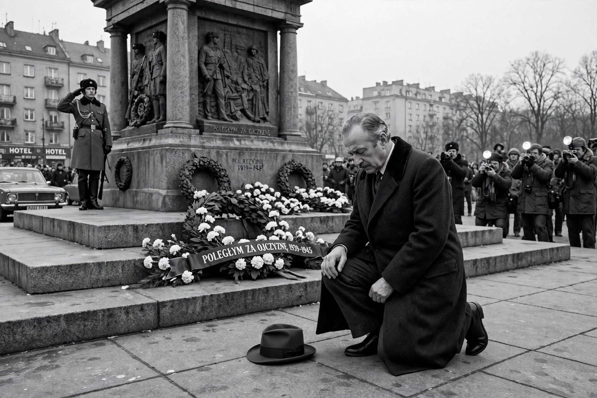

Willy Brandt

| Willy Brandt | |
|---|---|
| Born | Herbert Ernst Karl Frahm, 18 December 1913, Lübeck, German Empire |
| Died | 8 October 1992, Unkel, Germany |
| Office | Chancellor of West Germany (1969–1974); Governing Mayor of West Berlin (1957–1966); Foreign Minister (1966–1969) |
| Party | Social Democratic Party (SPD) |
| Award | Nobel Peace Prize (1971) |
Willy Brandt (born Herbert Ernst Karl Frahm; 18 December 1913 – 8 October 1992) was a German politician and statesman who was leader of the Social Democratic Party of Germany (SPD) from 1964 to 1987 and served as Chancellor of the Federal Republic of Germany (West Germany) from 1969 to 1974. He was awarded the Nobel Peace Prize in 1971 for his efforts to strengthen cooperation in western Europe and achieve reconciliation between West Germany and the countries of Eastern Europe.
Early life and exile
Born in Lübeck, Brandt joined socialist youth organisations as a teenager and adopted "Willy Brandt" as a nom de guerre after fleeing Nazi Germany for Norway in 1933. During the Second World War he worked as a journalist in Norway and Sweden, reporting on the resistance and the war, and returned to Germany in 1945 in a Norwegian uniform. As Governing Mayor of West Berlin from 1957, he became internationally prominent during the Berlin Crisis and the building of the Berlin Wall.
Chancellorship and Ostpolitik
After serving as foreign minister and vice-chancellor in the grand coalition of 1966–1969, Brandt became Chancellor in 1969 with the slogan "Dare more democracy" (Mehr Demokratie wagen), pursuing domestic reforms in education, welfare and voting rights. His defining legacy was Ostpolitik, the normalisation of relations with the East: treaties with the Soviet Union (1970) and Poland (1970) recognising post-war borders, the Four Power Agreement on Berlin (1971) and the Basic Treaty with East Germany (1972). On his 1970 visit to Warsaw he famously knelt in silent tribute at the memorial to the Warsaw Ghetto uprising — the Kniefall von Warschau, an enduring symbol of German contrition.
Resignation and later life
Brandt resigned in May 1974 after his close aide Günter Guillaume was exposed as an East German spy. He remained an elder statesman: president of the Socialist International, chairman of the Independent Commission on International Development Issues (whose 1980 "Brandt Report" popularised the North–South divide), and an honorary chairman of the SPD. He welcomed German reunification in 1990, declaring that "what belongs together will grow together". He died in 1992.
See also: Helmut Kohl · Cold War · German reunification